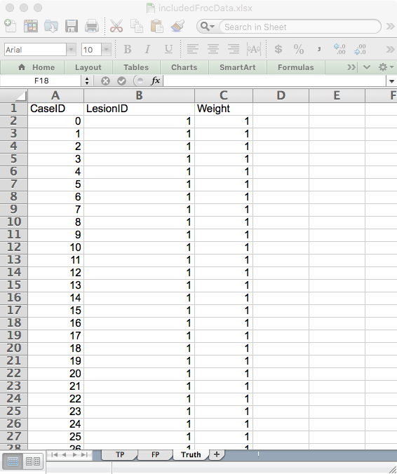
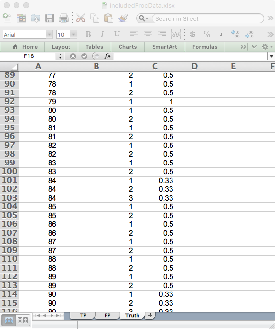
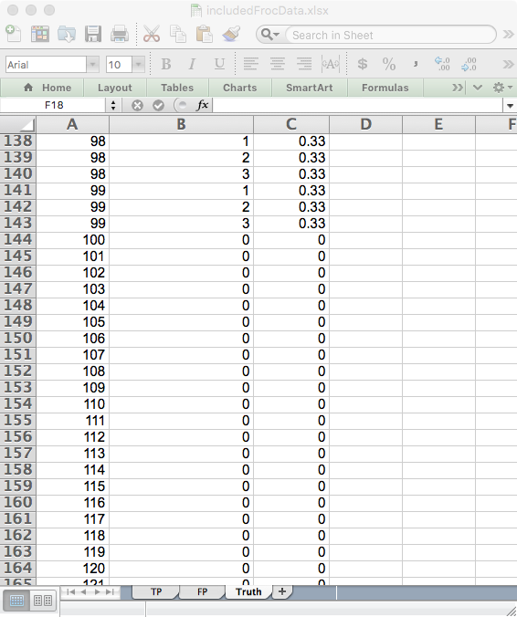
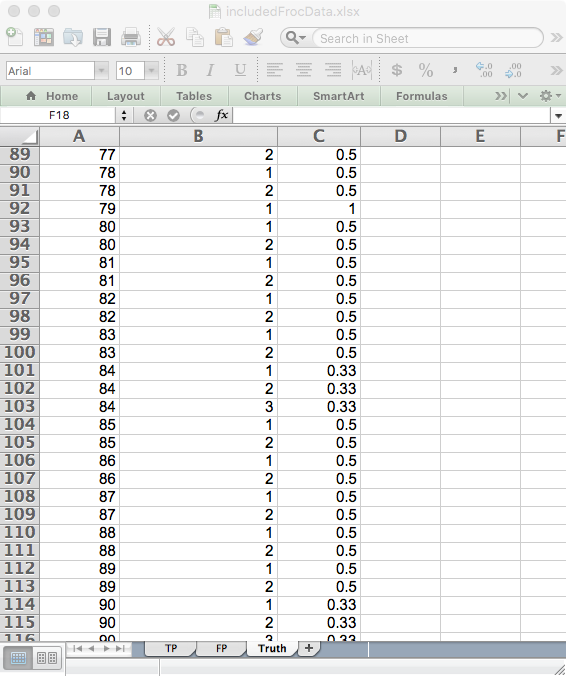
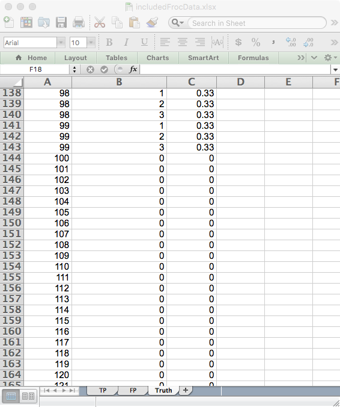

Chapter 3 FROC data format
3.1 Introduction
In the free-response ROC (__FROC__) paradigm (Bunch et al. 1978) the observer’s task is to indicate (i.e., mark the location of) and rate (i.e., assign an ordered label - or confidence level - representing the degree of suspicion) regions in the image that are perceived as suspicious for presence of disease. Accordingly, FROC data consists of mark-rating pairs, where each mark indicates a region1 that was considered suspicious for presence of a localized lesion and the rating is the corresponding confidence level. The number of mark-rating pairs on any particular case is a-priori unpredictable. It is a non-negative random integer (i.e., 0, 1, 2, …) that depends on the case, the reader and the modality. The relatively unstructured nature of FROC data makes FROC paradigm data more difficult to analyze than ROC paradigm data.2
- By adopting a proximity criterion, each mark is classified by the investigator as a lesion localization (LL) - if it is close to a real lesion - or a non-lesion localization (NL) otherwise.
The rating can be an integer or quasi- continuous (e.g., 0 – 100), or a floating point value, as long as higher numbers represent greater confidence in presence of one or more lesions in the ROI.3
Region-level-normal ratings are stored in the
NLfield and region-level-abnormal ratings are stored in theLLfield.
3.2 An actual FROC dataset
An actual FROC dataset (Zanca et al. 2009) is included as dataset04, which has the following dataset structure:
str(dataset04)
#> List of 8
#> $ NL : num [1:5, 1:4, 1:200, 1:7] -Inf -Inf 1 -Inf -Inf ...
#> $ LL : num [1:5, 1:4, 1:100, 1:3] 4 5 4 5 4 3 5 4 4 3 ...
#> $ lesionNum : int [1:100] 1 1 1 1 1 1 1 1 1 1 ...
#> $ lesionID : num [1:100, 1:3] 1 1 1 1 1 1 1 1 1 1 ...
#> $ lesionWeight: num [1:100, 1:3] 1 1 1 1 1 1 1 1 1 1 ...
#> $ dataType : chr "FROC"
#> $ modalityID : Named chr [1:5] "1" "2" "3" "4" ...
#> ..- attr(*, "names")= chr [1:5] "1" "2" "3" "4" ...
#> $ readerID : Named chr [1:4] "1" "3" "4" "5"
#> ..- attr(*, "names")= chr [1:4] "1" "3" "4" "5"Examination of the output reveals that:
- The
datasetstructure is a list with 8 members. - This is a 5-treatment 4-reader dataset (the lengths of the first and second dimensions, respectively, of the
NLandLLarrays). The names of the treatments are in themodalityIDarray:
For example, the name of the second treatment is "2".
- The names of the readers are in the
readerIDarray:
For example, the name of the second reader is "3". Apparently reader "2" “dropped out” of the study.
3.2.1 Numbers of non-diseased and diseased cases
The third dimension of the
NLarray is the total number of all cases, i.e., 200, and the third dimension of theLLarray, i.e., 100, is the total number of diseased cases.Subtracting the number of diseased cases from the number of all cases yields the number of non-diseased cases.
Therefore, in this dataset, there are 100 diseased cases and 100 non-diseased cases.
3.2.2 Why dimension the NL array for the total number of cases?
- Because, in addition to
LLs,NLsare possible on diseased cases. - Only
LLsare possible on diseased cases. - Only
NLsare possible on non-diseased cases. - The missing values are filled in with
-Inf.
3.2.3 Ratings on a non-diseased case
- For treatment 1, reader 1 and case 1 (the first non-diseased case), the NL ratings are:
3.2.4 The meaning of a negative infinity rating
- Obviously, a real rating cannot be negative infinity.4 This value is reserved for missing ratings, and more generally, missing marks.5 For example, since all values in the above code chunk are negative infinities, this means this treatment-reader-case combination did not yield any mark-rating pairs. This possibility, alluded to above, is only possible with FROC data. All other paradigms (ROC, LROC and ROI) yield at least one rating per case.
- The length of the fourth dimension of the
NLarray is determined by that treatment-reader-case combination yielding the maximum number ofNLs. Consider the following chunk:
for (i in 1:5)
for (j in 1:4)
for (k in 1:200)
if (all(dataset04$NL[i,j,k,] != -Inf))
cat(i, j, k, all(dataset04$NL[i,j,k,] != -Inf),"\n")
#> 5 4 192 TRUE- This shows that the fourth dimension of the
NLarray has to be of length 7 because one, and only reader, specifically reader “4”, made 7NLmarks on a diseased case in treatment “5”!
3.2.5 Ratings on a non-diseased case
Unlike non-diseased cases, diseased cases can have both NL and LL ratings.
- For treatment 1, reader 1, case 51 (the 1st diseased case) the NL ratings are:
dataset04$NL[1,1,51,]
#> [1] -Inf -Inf -Inf -Inf -Inf -Inf -Inf
dataset04$lesionNum[1]
#> [1] 1
dataset04$LL[1,1,1,]
#> [1] 4 -Inf -Inf
mean(is.finite(dataset04$LL))
#> [1] 0.3043333. There are only two finite values because this case has two ROI-level-abnormal regions, and 2 plus 2 makes for the assumed 4-regions per case. The corresponding $lesionNum field is 1.
mean(is.finite(dataset04$NL[,,1:50,]))
#> [1] 0.05942857
dataset04$NL[1,1,51,]
#> [1] -Inf -Inf -Inf -Inf -Inf -Inf -Inf
dataset04$lesionNum[1]
#> [1] 1
dataset04$LL[1,1,1,]
#> [1] 4 -Inf -Inf
mean(is.finite(dataset04$LL))
#> [1] 0.3043333mean(is.finite(dataset04$NL[,,1:50,]))
#> [1] 0.05942857
dataset04$NL[1,1,51,]
#> [1] -Inf -Inf -Inf -Inf -Inf -Inf -Inf
dataset04$lesionNum[1]
#> [1] 1
dataset04$LL[1,1,1,]
#> [1] 4 -Inf -Inf
mean(is.finite(dataset04$LL))
#> [1] 0.3043333- The ratings of the 2 ROI-level-abnormal ROIs on this case are 4. The mean rating over all ROI-level-abnormal ROIs is 3.6785323.
3.3 The FROC Excel data file
An Excel file in JAFROC format containing simulated ROI data corresponding to dataset04, is included with the distribution. The first command (below) finds the location of the file and the second command reads it and saves it to a dataset object ds.
fileName <- system.file(
"extdata", "includedFrocData.xlsx", package = "RJafroc", mustWork = TRUE)
ds <- DfReadDataFile(fileName)
ds$dataType
#> [1] "FROC"The DfReadDataFile function automatically recognizes that this is an ROI dataset. Its structure is similar to the JAFROC format Excel file, with some important differences, noted below. It contains three worksheets:
 


- The
Truthworksheet - this indicates which cases are diseased and which are non-diseased and the number of ROI-level-abnormal region on each case.- There are 50 normal cases (labeled 1-50) under column
CaseIDand 40 abnormal cases (labeled 51-90).
- The
LesionIDfield for each normal case (e.g.,CaseID= 1) is zero and there is one row per case. For abnormal cases, this field has a variable number of entries, ranging from 1 to 4. As an example, there are two rows forCaseID= 51 in the Excel file: one withLesionID= 2 and one withLesionID= 3.
- The
Weightsfield is always zero (this field is not used in ROI analysis).
- There are 50 normal cases (labeled 1-50) under column


- The
FP(orNL) worksheet - this lists the ratings of ROI-level-normal regions.- For
ReaderID= 1,ModalityID= 1 andCaseID= 1 there are 4 rows, corresponding to the 4 ROI-level-normal regions in this case. The corresponding ratings are . The pattern repeats for other treatments and readers, but the rating are, of course, different.
- Each
CaseIDis represented in theFPworksheet (a rare exception could occur if a case-level abnormal case has 4 abnormal regions).
- For

- The
TP(orLL) worksheet - this lists the ratings of ROI-level-abnormal regions.- Because normal cases generate TPs, one does not find any entry with
CaseID= 1-50 in theTPworksheet.
- The lowest
CaseIDin theTPworksheet is 51, which corresponds to the first abnormal case.
- There are two entries for this case, corresponding to the two ROI-level-abnormal regions present in this case. Recall that corresponding to this
CaseIDin theTruthworksheet there were two entries withLesionID= 2 and 3. These must match theLesionID’s listed for this case in theTPworksheet. Complementing these two entries, in theFPworksheet forCaseID= 51, there are 2 entries corresponding to the two ROI-level-normal regions in this case.
- One should be satisfied that for each abnormal case the sum of the number of entries in the
TPandFPworksheets is always 4.
- Because normal cases generate TPs, one does not find any entry with
References
Bunch, P. C., J. F. Hamilton, G. K. Sanderson, and A. H. Simmons. 1978. “A Free-Response Approach to the Measurement and Characterization of Radiographic-Observer Performance.” Journal Article. J of Appl Photogr. Eng. 4: 166–71.
Zanca, Federica, Jurgen Jacobs, Van OngevalChantal, Filip Claus, Valerie Celis, Catherine Geniets, Veerle Provost, Herman Pauwels, Guy Marchal, and Hilde Bosmans. 2009. “Evaluation of Clinical Image Processing Algorithms Used in Digital Mammography.” Journal Article. Medical Physics 36 (3): 765–75.
In order to avoid confusion with the ROI-paradigm, I do not like to use the term ROI to describe the marks made by the observer.↩
Recall that the ROC paradigm always yields a single rating per case.↩
The directionaliy of the rating is not a limitation. If lower values correspond to increased confidence level, it is only necessary to transform the observed rating by subtracting it from a constant value. The constant value can be chosen arbitrarily, typically as the maximum of all observed ratings, thereby ensuring that the transformed value is always non-negative.↩
If an observer is so highly confident in the absence of a localized lesion, he will simply not mark the location in question; if he did, then, logically, he should mark all areas in the image that are definitely not lesions; in the FROC paradigm only regions with a reasonable degree of suspicion are marked. The radiologist only wishes to draw attention to regions that are reasonably suspicious; the definition of “reasonable” is determined by clinical considerations.↩
Since there is a one-to-one correspondence between marks and ratings.↩